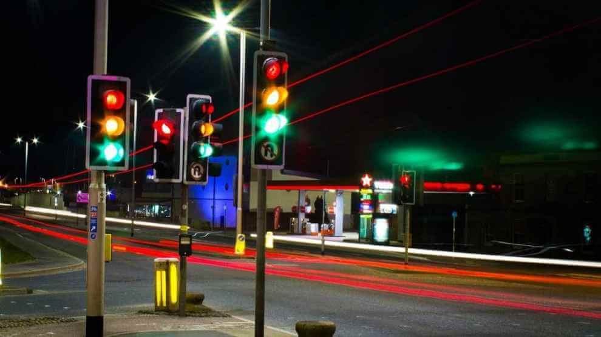

Quem somos?
A TDA - Tecnologia, Desenvolvimento e Análise, é uma empresa no ramo da tecnologia especializada em semáforos inteligentes, dedicada a promover a
segurança viária por meio de soluções inovadoras em semáforos e sistemas de
controle de tráfego.
Nossos sistemas avançados utilizam sensores para monitorar o fluxo de veículos em
tempo real e ajustar os semáforos de forma dinâmica, visando melhorar a eficiência e segurança nas vias.
Clique na seção "Integrantes" para conhecer um pouco mais sobre os fundadores da TDA.

Missão
Temos a missão de promover a segurança e a fluidez do tráfego por meio da implementação de soluções tecnológicas inovadoras em semáforos, contribuindo assim, para a redução de acidentes e a melhoria do transito nas cidades.
Visão
Ser líder no mercado de tecnologia aplicada à segurança viária, reconhecidos pela excelência em nossos produtos e serviços, e por nossa contribuição significativa para a construção de cidades mais seguras e sustentáveis.

Futuro
Na TDA, acreditamos que o futuro da mobilidade urbana será moldado por semáforos inteligentes. Trabalhamos para que nossas cidades tenham infraestrutura capaz de se adaptar às mudanças do tráfego. Nossa equipe de P&D explora continuamente novas tecnologias para manter os semáforos da TDA na vanguarda do setor.
Valores
- - Compromisso com a segurança
- - Inovação contínua
- - Parceria e colaboração
- - Responsabilidade social e ambiental
- - Excelência e qualidade